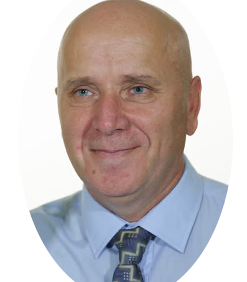

Luc Wendel

Beschrijving van mezelf
Mijn naam is Luc Wendel. Ik ben een mensgericht, sociaal persoon die creatief is in denken en handelen. Rustig, pragmatisch en resultaatgericht: ik schroom niet om op basis van zorgvuldige analyse, moeilijke besluiten te nemen en deze te implementeren. Duidelijkheid is belangrijke waarde voor mij en ik ben altijd rechtvaardig met oog voor de mensen die het betreft. Waar nodig ben ik sturend, bij voorkeur coachend. Integriteit en loyaliteit staan bij mij hoog in vaandel.